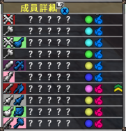
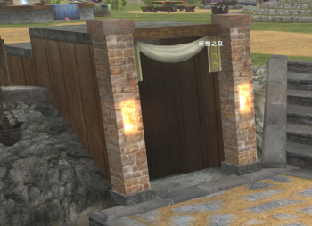
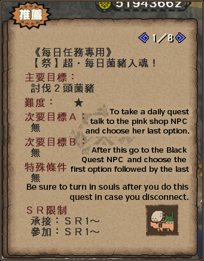
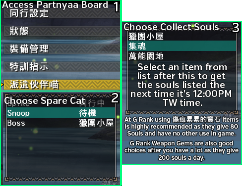
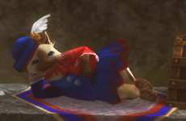

The Hunter Festival is a regularly running event that gives Unique Weapons, Decorations and access to a Point Store. The event is functionally broken up into three weeks; Sign Up, Soul Collection and Winners' Week.
Sign Up Week consists of two things; guilds being assigned colours and the Hunting Competition.
Functionally this part requires no input on a normal guild member's behalf. The guild leader or second and third in command can sign up the Guild at any point during this week. This will assign the guild a random colour out of Red and Blue which will be used for all ongoing parts of this event. Colour will start to be displayed next to a Hunter's name in town after their guild is signed up.

The Hunting Competition is a competitive event that takes place during set hours, quests are available from 14:00 on the Friday until 14:00 on the following Monday. The quests are available on the main non-G Rank quest giver - the Guildie wearing black - in the Official Hunting Assembly (官方狩獵大會) section while it is up.
The quests themselves vary from contest to contest but at this point mostly consist of fighting standard G rank monsters in preset gear with your choice of Origin Weapon and three decos for its slots. There is usually a Solo Quest and a Guild Quest.
For the solo quest, simply participating at all in the quests will grant you materials for Pugi Cuffs and Partnyaa Decorations. Coming in high spots grants tickets for unique helmets which can be used as real armour or used to create a transmog.
The Guild Quest is mainly for boosting your teams points for the overall festival. This is covered in more depth in the festival section proper but roughly speaking adds an nearly an entire guild's souls worth to your Guild's colour greatly increasing chances of winning and adds an extra person worth of Souls for the sake of calculating Festival Point rewards. These quests often have a specific sub-objective such as breaking a part or severing a tail and party composition will have to be adjusted as necessary to actually meet these requirements.
For both quests the Armour Set you get will be preset based on the quest, you can be fairly flexible in terms of how your set is built by simply utilising the slots in a weapon. The actual decorations you want to use will vary massively depending on weapon type so be sure to adapt based on your own weapon, the skills on the sets and your access to decorations.
Souls (魂) are points you earn across the Soul Gathering week, there are a number of different sources for these points which you should aim to utilise most of every time you are participating in the Festival.
Souls will always be displayed in the post quest messages, you will see your current count as well as how many were added by a quest. You can only carry 500 souls at any one time. Souls are both what dictate which colour wins the festival and how many festival points you end up getting to spend during Results Week on.
If contributing, you should turn on auto-contribution in options or turn in souls in semi-often to the Festival Manager near the blacksmith to avoid loss from disconnects or other issues, simply talk to her while you have points to turn them in.
To turn on auto-contribution you should simply open the main menu and then access 選項 > 其他 and toggle 入魂自動化設定 to Off.
If you are not contributing you simply need to do the opposite; never interact with the above NPC and turn auto-contribution off. Even if you turn in Souls accidentally you will be kicked from Cappuccino if you have less than 5,000 on the Wednesday before maintenance. You won't be kicked now due to the game's upcoming closure, but it's still polite to try your best.
Every Monster has a fixed number of souls associated with them, typically between 1 and 17. Most monsters have their souls given as long as you hunt them successfully - which includes both captures and slays - but some are set to purely capture or slay requirements. For example, the G Exclusive Midogaron is usually set to be capture only. You can verify both the number of souls given from each monster and the requirements on the Main Festival Website.
Soul gems are items you can take on quest that will grant an extra fixed number of souls upon quest completion. There are three different values for these Gems that grant either 20 Souls (魂玉), 40 Souls (上魂玉) or 80 Souls (重魂玉). Only one gem is consumed on any single quest meaning even if you have 99 in your inventory you will only get 20, 40 or 80 extra souls.
You can currently get these gems from running the Hunter's Road each week. This allows you to buy 5x 重魂玉G, 上魂玉G and 魂玉G every week. As the minimum time between festivals will be three weeks you will be able to get 15x of all of these every festival for a total of 2,100 souls worth.
The Diva Defense event also grants 25x 重魂玉G for contributing on all 7 days during prayer week which is a total of 1,250 souls worth. Unlike Road this may not actually sync perfectly to the festival cycle but you should get 25 every other festival absolute minimum.
Festival itself gives 5x 重魂玉G, 上魂玉G and 魂玉G for 700 free souls during Soul Collection week.
With all of the above combined and only utilising half of the Diva Defense gems you will get 3,425 free souls a festival, which makes it trivial to utilise the daily options to finish with 5,000 or more souls without even actively grinding secrets.
As long as you have completed Chapter 3 of the Diva Questline you can listen to a Diva Song. This song grants a minimum of +1 soul on any quest and +2 when you are at maxed out affection. This is not a huge amount but they add up while you utilise other sources. Popping a Diva Song before you start grinding out a secret window is usually a good idea.

At G Rank you can insert a special Soul Collection (入魂建議) sigil into your weapon to add a single extra soul to any quest. The sigil itself can be found on the White Monoblos B recipe at a 5% chance of being rolled as well as on any sigil that ends up rolling outside of its fixed percentage ranges. Naturally this is not a huge increase to souls but it's a fixed addition that can be utilised alongside all other sources of souls.
Secret Quests are a mechanic of the Hunter Festival to try and keep the soul totals across both teams close right up until the end of the Festival. Three are always three Secret Quests a day, during the week these are only available to the team that is currently behind and ,b>become available for two hour windows at 06:00 / 14:00 / 22:00 TW time.
During the weekend all Secret Quests from 14:00 on Saturday until the 06:00 on Monday are team neutral, this means you will always be able to make use of them. It is incredibly trivial to end up with 5,000 souls just by getting on in one or two of these windows and it is the easiest way to guarantee you have access to a secret as the ones from Monday onwards may end up being all for a single team if there is a landslide score wise.
As their name implies, secret quests are secret and it is up to players to find them. There is a logic to which quests are available but ultimately you will be best served by lurking on the appropriate populated servers and checking forums. There are only a certain number of quests so later on you can simply go through these to try and identify the quest if there is not information being posted.
In the case of forums you will want to simply monitor the sites linked to on this page they will usually be posted within the first 15 minutes of a secret unless it is the first time the quest is live in which case it can take longer (likewise for ones in awful windows like 06:00).
Obviously if you are looking for in game messages about secret quests you should be sure to that your system locale is set to chinese, otherwise you may not even be able to see messages from whoever is advertising which quests are currently active.
Messages to look out for are ones that detail the number of souls a quest will be giving, for example if you saw the message "這裡! 逆轉99魂剛炎角火飯-3" you can see that they are advertising a secret quest that gives 99 souls (逆轉99魂) for HR5 Gou (剛) Varusaburosu (炎角火) with a food buff and 3 slots remaining (飯-3). Obviously the actual important parts of the message are the Monster Name and the Soul Total.
In the case of monsters that have multiple quests at a certain rank you will either need to see what the quest is by joining one that is already posted or hope that someone is actively spamming the quest name itself.
Of course you can always simply ask in Global by sending "請問有逆任嗎? / 請問逆任是?", naturally you want to be on the most popular server if asking chat.
Each day you can utilise a daily to get 200 souls from killing two mosswine. This quest requires that you consume a Purple Hunter Pass (獵人通行證·紫) which you get 7 of after you have contributed at least a single soul to the festival on the Purple Festival NPC in the options 領取獎勵 > 個人的目檷褒獎.
The quest itself is always found on the HR quest NPC in her first (or second if you haven't done the Extreme Style demo quests) option followed by the Last.

Taking a Partnyaa on a quest with you has a chance to randomly give you Festival Souls back. This is typically only a handful but can go up to ten incredibly rarely. Other than this you can also send out a Partnyaa each day to collect a fixed number of souls based on an item given to them by interacting with the Partnyaa board in the Halk and Partnyaa area of your house (heart icon).

Participating in the Hunting Competition grants a booster pack of souls to your Guild and to your Guild's colour. The total granted is based on the performance within the Competition itself which you will not find out until Winners' Week.
| Group Contest |
|
| 1st ~ 10th | 5,000 souls to guild, 50,000 souls to guild colour |
| 11th ~ 30th | 2,000 souls to guild, 20,000 souls to guild colour |
| 30th ~ 50th | 1,000 souls to guild |
While contributing there are a number of personal soul totals that act as achievement points and give rewards, the first reward is 7x Purple Hunter Pass (獵人通行證·紫) which is given for contributing a single point. This is used to take the Mosswine killing daily quest which gives 200 souls.
You can claim rewards in 領取獎勵 (Receive Rewards) > 個人的目標褒獎 (Personal Goals) on the Purple Festival NPC
Other rewards include the various Ancient Hunting Books that level Transcend and the Ceremony Lyrics (祭典的抒情詩) items that are used to craft the weapons and armours that need participation in all four cycling events.
Guild Targets are identical to Personal Targets but are based on total points contributed by the entire guild, these goals grant extra items that are used to craft and upgrade Festival armour and weapons as well as to take Winners Quests.
As mentioned above, after 700 points are contributed everyone will receive enough items to get 700 souls (重魂玉x3, 上魂玉x3 and 魂玉x3), combined with the Mosswine quest items this is enough for 1900-2100 Souls with zero real effort required.
You can claim rewards in 領取獎勵 (Receive Rewards) > 獵團的目標褒獎 (Guild Goals) on the Purple Festival NPC
To discourage people from simply putting in 1 point and being a leech there are various Personal Multiplier tiers. Although the total guild soul pool is divided by the number of people contributing, players can get more back by contributing more to get a higher multiplier after the souls are divided:
| Contributed Points | 5000 or more | 2000-4999 | 100-999 | 99 or less |
| Personal Multiplier | 3.0x | 2.0x | 1.0x | 0.5x |
As Cappuccino requires a minimum of 5,000 Souls if you are participating you will always have the final 3.0x multiplier active. The requirement has been removed, but you should still get 5,000 souls if you want best returns.
Based on the total number of Souls contributed by your guild you will gain a large amount of Festival Points in the third week of the festival. These points can be used on a huge variety of items including most consumables and materials in the game. The total number of souls you get is based directly upon your guild's total souls divided by the number of contributing players. This means that every player who contributes further divides the pool.
For an example of how this works (and why Cappuccino required 0 or 5,000 souls previously):
if 6 people contributed 50,000 points total and you had contributed only 1 soul point, you would receive 4,166 festival points ((50,000 / 6) x 0.5) while someone who contributed 10,000 soul points would get 25,000 festival points ((50,000 / 6) x 3).
In this same situation if you had simply not contributed the person who contributed 10,000 soul points would instead get 29,999 festival points (3 x (49,999 / 4))).
This means you would have fucked them over to the degree of 4,999 points.
It's important to either simply not contribute or to be sure to try your best because otherwise you are literally causing everyone else to get less because you are lazy.
The above ignores some other factors that change total points but is accurate enough to say why you should avoid contributing if you are not going tot ry.
Points are both claimed and spent on the Festival Manager NPC. You can have a maximum of 120,000 Festival Points and they are saved between festivals (though you cannot access the festival store without it being Winners' Week). Spend any you had left from previous festivals while claiming if there are high multipliers as you are fairly likely to overflow depending on your previous results.
If your team wins the the festival, you will be allowed to go on various Winners' Quests. These can be taken from the Cat NPC who sits next to the Festival Manager, to go on these quests you need to either spend Festival Tickets (祭典之證) or Festival Gems (祭典的熱氣), the amount of these you receive depends upon your performance in the previous week (though you can buy both for Festival Points)
Completing Winners' Quests is the only way to get festival equipment, this includes Festival Weapons, Armour and Decorations, many of which are incredibly good and can be the key to completing some sets as they have higher than standard points in various key skills such as Thunder Clad or Drawing Arts.
| Item | Function |
| Festival Ticket 祭典之證 |
Festival Tickets are used to take standard HR1-6 Winners Quests. These quests will usually give back a herb which is a key item for crafting a Festival Decoration as well as Festival Memories (祭典的回憶) which are used for upgrading non-G Festival Armour (which will mostly not be done). |
| Festival Gem 祭典的熱氣 |
Festival Gems are used to take G Rank Winners Quests. These quests will always give back Festival Coins or Emblems (Festival Emblem) which are used for making G Rank winners equipment. These quests usually also give materials for either Decorations or Weapons similar to the Ticket quests. 50 Festival Gems and 5x Festival Emblems are required to complete every festival Decoration. It's important to balance the taking of quests with keeping enough Gems to actually finish the equipment. |
With MHF-Z there are Zenith Festival Weapons. These simply require 5 of their Key Material and 10 Festival Marks (祭典的刻印). Festival Marks are earned on Zenith Winners Quests, these cost 4 Festival Gems to be taken and give 2 Festival Marks back fixed (with 1% of extras). This means you need to spend only 20 Festival Gems to get a Festival Zenith Weapon which are some of the best available and the only place Capcom consistent puts hybrid elements and easy access to Skill Slots Up.
These zenith weapons require the same materials as other Zenith Weapons after their first tier including the final upgrade step needing 2x of a Zenith's Rare and 3x each of the semi-rare and GR800 breaks meaning you still need to actually grind associated Zeniths a decent amount to finish them up.